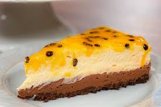

- 200 gramas de biscoito do tipo Maria
- 100 gramas de manteiga sem sal derretida (1/2 xícara de chá)
lata de leite condensado (395 gramas)
- 3 gemas
- 1/2 xícara de chá de polpa de maracujá sem sementes (1 a 2 maracujás) (90 gramas)
- 100 ml de creme de leite (1/2 xícara de chá)
- 200 gramas de chocolate meio amargo em pedaços (1 xícara de chá bem cheia)
Modo de preparo
Reúna os ingredientes da torta de maracujá com chocolate simples, separe a forma de fundo removível e aqueça o forno a 180ºC por 10 a 15 minutos;
Um recipiente contendo uma farofinha de bolacha triturada e manetiga.
Para a base da torta, em um processador ou liquidificador, coloque as bolachas e triture até virar uma farofa. Transfira para um recipiente, adicione a manteiga e, com as pontas dos dedos, misture bem até formar uma farofinha molhada;
Uma forma redonda forrada com macha de bolacha.Receiteria
Coloque a farofinha em uma forma redonda de fundo removível (22cm de diâmetro por 6cm de altura), forre o fundo e as laterais, pressionando bem - não deixe a massa ficar muito grossa nem tão fina. Leve ao forno preaquecido a 180ºC por cerca de 5 minutos. Depois, leve à geladeira para esfriar;
Um recipiente contendo suco de maracujá.Receiteria
Com o auxílio de uma peneira, peneire a polpa de maracujá para extrair o suco e separar as sementes - reserve as sementes para a finalização da torta;
Um recipiente contendo uma torta de maracujá.Receiteria
Para o recheio, em um recipiente, coloque o leite condensado, as gemas, o maracujá e misture bem com um fouet até ficar homogêneo. Despeje por cima da massa, espalhe bem e leve ao forno preaquecido a 180ºC por cerca de 30 minutos;
Um recipiente contendo ganache.Receiteria
Enquanto isso, coloque o chocolate em um recipiente e derreta no micro-ondas, de 30 em 30 segundos, mexendo nos intervalos (você também pode derreter em banho-maria). Assim que estiver totalmente derretido, adicione o creme de leite e mexa até incorporar;
Um recipiente contendo uma torta de maracujá com chocolate simples.Receiteria
Retire a torta do forno e despeje a ganache de chocolate por cima. Leve à geladeira por, no mínimo, 2 horas antes de servir;
Um recipiente contendo uma torta de maracujá com chocolate simples.Receiteria
Agora é só servir! Aproveite o sabor delicioso dessa torta tão amada.